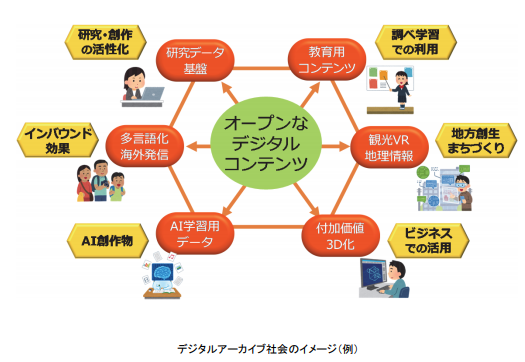
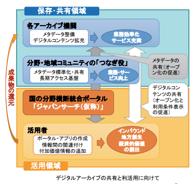

-
- 改版履歴
- 【2019年4月17日】デジタルアーカイブ関連抜粋（2017年以降）追加
- 歩み
- 2017年には、自民党のデジタルアーカイブジャパン構想推進議員連盟の要請を受け、
- デジタルアーカイブ推進コンソーシアム (DAPCON)が、デジタルアーカイブ学会法制度部会の協力のもと、「デジタルアーカイブ振興基本法（仮称）」を提案するに至った。
- その後、衆議院法制局における検討を経て、2018年5月8日に開催された超党派のデジタル文化資産推進議員連盟総会において、「デジタルアーカイブ整備推進法（仮称）要綱案」が提示された。
- これを契機として、今後民間及び国政レベルにおける論議が広く進展することが期待される。
-
-
- はじめに
- 序章 デジタルアーカイブ社会
- 第１章 現状と課題
- １．諸外国の現状
- （１）アーカイブの構築と連携について
- （２）アーカイブの活用促進について
- ２．日本の現状
- （１）アーカイブの構築と連携について
- （２）アーカイブの活用促進について
- ３． 諸外国の現状を踏まえた日本の課題
- （１）アーカイブの構築と連携について
- ① デジタルアーカイブ構築と連携のための体制について
- ② 中小機関及び地方における課題について
- （２） アーカイブの活用促進について
- ① 自由に使えるデジタル情報資源の不足について
- ② 法的課題について
- 第２章 我が国におけるデジタルアーカイブ推進の在り方
- １．「共有」が支えるデジタルアーカイブサイクル
- ２．デジタルアーカイブ社会の構築
- ３．各アーカイブ機関に求められる役割
- （１） 「デジタルアーカイブの構築・共有・活用ガイドライン」の活用
- （２） 人材の確保及び育成
- （３） 評価指標の見直し
- （４） 海外発信の強化
- ４．つなぎ役に求められる役割
- （１） 分野/地方の独自性を反映したポータルの整備・提供
- （２） メタデータの整備推進、標準化及び用語の統制
- （３） デジタルコンテンツ等のオープン化の推進・二次利用条件の整備、活用促進の取組
- （４） デジタルコンテンツ拡充及び保存のための技術や法務上の業務支援
- （５） 評価指標の見直しとインセンティブの付与
- （６） 意識啓発・人材育成
- ５． 国や地方自治体等に求められる役割
- （１） デジタルアーカイブの積極的な活用
- （２） 活用コミュニティの形成支援
- （３） 各アーカイブ機関の課題解決支援策等
- （人的・財政的支援措置）
- （技術や法務上の業務支援のための整備）
- （地方における取組の支援）
- 第３章 今後の国の取組の方向性
- （１） 「デジタルアーカイブの構築・共有・活用ガイドライン」の策定
- （２） 国・地方自治体が保有するデジタル情報資源のオープン化推進
- （３）国の統合ポータル構築の取組推進
- （４）デジタルアーカイブ活用促進のためのフォーラムの設置の検討
- （５） つなぎ役の取組支援
- （６） アーカイブ機関の人材教育支援
- （７）アーカイブ機関による取組促進のためのインセンティブの検討
- 第４章 残された論点
- 国家戦略として、アーカイブ機関の取組をさらに強力にけん引するようなビジョンの構築とその実現のための枠組の継続的な検討が必要
- 国や公的機関が中心となり、アーカイブ機関が無理なくデータを整備・共有・連携できる共通基盤（プラットフォーム）の構築についての検討を行うことが望まれる
- おわりに
- （補足資料）
- 評価指標（例）一覧
- アーカイブ連携・活用の優良事例
- （関連資料）
-
- はじめに
- （本ガイドラインの背景）
- 様々なデジタル情報資源が、二次利用を促進する形でオープンに提供され、広く流通することが望まれる。
- 様々な立場の人が多様な目的で活用できるデジタル情報資源が増えることで、新たなイノベーションが生み出され、社会が活性化する。
- アーカイブ機関
- 博物館・美術館、図書館、文書館といった文化的施設に加えて、大学・研究機関、企業、市民団体、官公庁・地方公共団体などの有形・無形の様々なコンテンツを保有する機関・団体等
- （本ガイドラインの対象者と目的）
- （本ガイドラインにおける用語の整理）
- １．我が国として目指すべきデジタルアーカイブ推進の方向性
- （デジタルアーカイブ社会）
- 〔保存・共有領域〕
- 〔活用領域〕
- ２．デジタルアーカイブの整備に当たって
- (1) メタデータの整備
- (2) サムネイル/プレビューの作成
- (3) デジタルコンテンツの作成・収集
- (4) 長期アクセスの保証のために
- ３．データを共有するに当たって
- (1) 公開ポリシーの考え方
- (2) 二次利用条件の表示方法
- (3) 望ましい利用条件（オープン化の推進）
- (4) 利用条件表示の検討に当たっての留意点
- (5) データ共有の方法
- ４．データを活用するに当たって
- (1) データの活用における留意点
- (2) 付加価値情報の付与
- (3) 情報間の関連付け
- (4) 活用の結果できた成果物の還元
- (5) 活用のためのコミュニティ形成
- おわりに
- （補足資料）
- ●用語集
- ●利用条件表示一覧
- （参考資料）
- ●確認すべき標準・ガイドライン等
- ●活用できる表形式のデータとは？
- ●よくある質問
- ●ガイドライン早見表
-
- デジタルアーカイブジャパン推進委員会
- デジタルアーカイブジャパン推進委員会（第1回）（2017年9月5日）
-
- デジタルアーカイブ社会のイメージ（例）
- 
- デジタルアーカイブの共有と利活用に向けて
- 

- デジタルアーカイブジャパンの実現に向けた工程表（全体）
- ジャパンサーチ（仮称）における共通メタデータフォーマットの検討の概要
- ジャパンサーチ（仮称）におけるデータ変遷のイメージ
- デジタルアーカイブアセスメントツールの概要
- デジタルアーカイブの構築を進めても、ＨＰへのアクセス数や入館者数だけで アーカイブ機関やつなぎ役への評価が行われ、デジタルアーカイブの質や取組みに着目した評価が行われていないとの指摘が寄せられてきた。
- そのため、デジタルアーカイブの質や取組みを機関の規模や役割別にどういったレベル感で進めていくことが望ましいのかにつき「組織的基盤の取組」や「メタデータの整備・公開」、「デジタルコンテンツの作成・公開」、「オープン化・二次利用可能性」、「持続可能性の担保」などの項目に分けて整理。
- このデジタルアーカイブアセスメントツールは、アーカイブ機関・つなぎ役自らの達成状況を把握するためのツールとして活用されることを想定している。
- 「デジタルアーカイブの構築・共有・活用ガイドライン」の概要
- 対象と目的
- 博物館・美術館、図書館、文書館、大学・研究機関、企業、官公庁・地方公共団体などの様々なコンテンツを保有する「アーカイブ機関」が、コンテンツの活用を意識しつつ、自らのデジタル情報資源の整備・運用のために役立つものとなるよう作成。併せて、アーカイブデータを活用する者が留意すべき点及び取り組むべき事項についても提示。
- 本ガイドラインに沿って提供されたメタデータ等によって、アナログも含めた多様なコンテンツが探索しやすくなり、観光・学術研究・教育・防災・ビジネスなどの様々な分野における活用が進展することが期待される。
- 本ガイドラインの主な内容

- 【デジタルアーカイブの整備に当たって行うこと】
- コンテンツのメタデータ（目録、所在情報等）の整備、デジタルコンテンツの作成・収集 など
- 【データを共有するに当たって行うこと】
- メタデータ、サムネイル・プレビュー、コンテンツのオープン化（自由な二次利用が可能）の推進
- メタデータ、サムネイル・プレビュー、コンテンツの利用条件の表示を推奨
- メタデータ：CC0
- サムネイル/プレビュー：CC0、CC BY、（PDM）
- デジタルコンテンツ：CC0、CC BY、（PDM）
- メタデータの共有のため、表形式データでのウェブ公開のほか、分野・地域のコミュニティの「つなぎ役」との連携 など
- 【データを活用するに当たって行うこと】
- アーカイブデータの活用者による、付加価値情報のデータ提供者へのフィードバック、情報間の関連付け など
- デジタルアーカイブ整備推進法（仮称）
- ＜参考： デジタルアーカイブ整備推進法（仮称）要綱案の骨子＞
- ① 政府によるデジタルアーカイブ振興基本計画の策定と３年毎の見直し
- ② 産官学民によるデジタルアーカイブ推進会議の設置
- ③ 達成目標数値の設定
- ④ 基本計画で規定する基本施策内容：我が国知的資産の統一的な検索、諸外国デジタルアーカイブとの連携と海外発信、利活用を促進するための専門的人材養成、関連技術等調査研究開発、ナショナルデジタルアーカイブ拠点の設置、民間主導による利活用促進とデジタルライセンス市場の整備など
- 自民党のデジタルアーカイブジャパン構想推進議員連盟
- 超党派のデジタル文化資産推進議員連盟
-
- 設立総会【2017年4月15日】
- 発足【2017年5月1日】
- 会長：長尾真（京都府公立大学法人 理事長・京都大学名誉教授）
- 会長代行：吉見俊哉（東京大学大学院情報学環 教授）
- 目的
- 21世紀日本のデジタル知識基盤構築のために、デジタルアーカイブに関わる関係者の経験と技術を交流・共有し、その一層の発展を目指し、人材の育成、技術研究の促進、メタデータを含む標準化に取り組みます。
- デジタルアーカイブに取り組む諸関連学会、研究者を繋ぎ、共通の認識基盤を形成しながらこうした具体的政策課題に取り組む
- 21世紀日本のデジタル知識基盤構築で、国と自治体、市民、企業はいかなる連携体制を組んでいけるのか。
- オープンサイエンスの基盤となる公共的デジタルアーカイブの構築をどう促進するか。
- デジタルアーカイブ人材の育成とキャリアパス構築、技術的標準化を促進する諸方策とは何か。
- 地域のデジタルアーカイブ構築を支援する体制をどう整えるか。
- さらに、これらの諸方策の根幹をなすデジタル知識基盤社会の法制度はいかにあるべきか。
- 関連
-
- MANGAナショナル・センター構想に関する有識者会議【2015年9月14日～】
- MANGAの世界的拠点として、MANGAナショナル・センター構想の検討
- 関連資料の収集・保存及び提供並びに連携拠点機能を有するミュージアムの新設を柱とする
- 国立漫画館、法整備で推進【2017年5月15日】
- 自民党のクールジャパン戦略推進特命委員会のプロジェクトチーム（ＰＴ）
- ＭＡＮＧＡナショナル・センター構想」
- 漫画やアニメの原画を収集、保存する国立の新施設建設を法整備で推進する方針を決めた
- 政府の経済財政運営の指針「骨太方針」に盛り込んで２０２０年開館を目指す
- 新施設を国立国会図書館の支部に位置付けると規定。漫画やアニメに携わる人材育成機能を持たせる。一定期間の財政措置を国に義務付ける。
- 政府絵の提言（案）
- 「ＭＡＮＧＡ（Manga, ANimation and GAme。以下、マンガ、アニメ、特撮及びゲームを総称して「ＭＡＮＧＡ」という。）は、「最古の漫画」ともいわれる12世紀頃の鳥獣人物戯画等、長い歴史に培われた豊かな文化を引き継ぐ、我が国における代表的な文化産業であり、高い国際競争力を有するのみならず、全国各地に約70ものＭＡＮＧＡの拠点が形成されており、我が国に対する優れた印象を形成することによりインバウンドの促進や地方創生等にも貢献が期待できる。
- 近年、仏や韓国等の諸外国において我が国のＭＡＮＧＡ資料の収集や展示・研究等が進められつつあるなど、国際的な関心が高まる中で、オリンピック・パラリンピック２０２０東京大会に集う世界の人々に向け、クールジャパンの重要な一翼を担うＭＡＮＧＡによる拠点を形成しおもてなしをする必要がある。一方、国内においては、ＭＡＮＧＡ関係者の引退等により貴重なコンテンツが散逸し、海外での評価が高いだけに「第二の浮世絵」との海外流出に懸念する声があがっている。また地方からは各地の拠点を結ぶハブ(軸)として国の拠点整備の要望も出ている。
- ○ 日本を代表する文化産業であるＭＡＮＧＡに関する、アーカイブ、ミュージアム、人財育成、産業振興の世界的な情報拠点の構築に向け、国立国会図書館を中心とした関係機関の連携を強力に推進する。
- 〇 上記の関係機関の連携を踏まえて、我が国において、２０２０年頃を目途に民間活力をも生かして「ＭＡＮＧＡナショナル・センター（仮称）」を創設することを目指し、必要な法制度の整備も含め検討し構想を強力に推進していくとともに、国立国会図書館を中心とした関係機関に対しても必要な協力を求めていくこととする。」
- 以上は、クールジャパン戦略推進特命委員会全体の提言の一つとして、党内の手続きを経て、政府に提言されます。今後、政府で取りまとめられる「経済財政運営と改革の基本方針(骨太の方針)2017」や、「日本再興戦略(経済成長戦略)2017」に反映させたいと思っています。
- MANGAナショナル・センター構想の実現に向けての立法措置（案）
- 文化芸術振興基本法の一分野について、MANGAナショナル・センター構想を特に推進するための措置を国に義務付けるプログラム法をつくる。
- 《法案の構成》
- ＊目的：ナショナル・センター構想の推進を通じて、国としてMANGA資料のアーカイブを構築するとともに、産業としてのMANGAの国際競争力を高めて日本経済の成長に資することなど
- ＊定義：MANGAの範囲、ナショナル・センターの定義など
- ＊基本理念：歴史的・国際的にみたMANGAの文化資源としての重要性など
- ＊国の責務：基本理念にのっとりナショナル・センターの整備を推進する責務など
- ＊法制上の措置等：基本方針に基づいてナショナル・センターの整備を推進するものとし、一定期間内に必要な法制上、財政上の措置を講ずべきことなど
- ＊基本方針：
- ・MANGA作品や原画等の中間生成物の幅広い収集による国のアーカイブの構築
- ・国立国会図書館の支部図書館として、納本制度等を活用して資料を収集
- ・原画等については、寄贈・寄託を受けることにより収集
- ・関係団体や大学等の教育機関との連携によるMANGAに携わる人材の育成
- ・アーカイブ、展示、人材育成等に関する国内外の関連施設との相互連携の強化
- ・アーカイブを活かした展示、イベント、関連商品の販売等の実施
- ・イベントホール、商業施設、アート・センターの併設
- ・PFI方式の活用など
- ＊計画：MANGA資料のアーカイブの構築に関する計画の策定など
- ＊体制整備：必要な法律案の立案等のための組織の設置など
- ＊施行期日等
- 《過去の類似例》
- ＊特定複合観光施設区域の整備の推進に関する法律（平成28年法律第115号）は、カジノを含む特定複合観光施設区域の整備の推進について、基本理念や基本方針を定めるとともに、政府に対して必要な法整備を、1年以内を目途に講じる義務を課し、そのための体制整備を行っている。
- 以上の法整備によって、国に対してナショナル・センター構想実現に向けた措置を講ずることを義務づけることになります。
-
- その他
-
- 趣旨
- 2014年6月より内閣府、国土交通省、文化庁、大学、民間研究機関、企業等、様々な分野の専門家、実践者の有志が集まり、検討を重ねてまいりました「東京文化資源区構想策定調査委員会」が発展する形で新規に組織された
- 上野、本郷、谷根千、神保町、秋葉原、神田、根岸等の特色ある文化を保有する地域を中核とした上野寛永寺から旧江戸城に至る東京都心北部一帯に残り、育まれているソフト、ハードあわせた様々な文化資源を活かしたプロジェクトを進めていくことで
- 事業系プログラム
- 歩ける文化資源区の創造
- 文化資源の発掘・再生・活用
- 人材の育成・活動・交流の場の充実
- 基盤整備プログラム
- 文化資源区構想を支える制度の提案
- 文化資源情報の整理・蓄積。発信
- 地域プログラム
- 集大成として「東京ビエンナーレ」へ
- 日本電子出版協会（JEPA）
- 国立国会図書館による有償の電子書籍・電子雑誌等の収集と閲覧提供についての提案【2017年3月24日JEPA】
- 日本の文化的資産であるデジタル資料を永久に保管する機能と、国民の知る権利を担保する機能を分けて捉え、前者は出版者が義務として無償でNDLに納入するものとし、後者は出版者がNDLにサービスとして有償で提供するものとします
- 資料の収集について
- 各出版者は NDL に対し、電子配信を行う全ての資料の DRM の無い汎用的形式のデータを、無償にて納入する 義務を負います。NDL は納入されたデータを、商業的な配信が停止されるか著作権が消滅するまでは、館内閲 覧を含めて一切開示することなく、後世のためにダークアーカイブとして保管します。また、NDL は、同デー タをナビゲーションに活用し、公開されている資料への効果的な誘導を実現します。
- 資料の館内閲覧について
- NDL は、各出版者と話し合い、適正な価格と条件で利用契約を締結し、出版社あるいは配信業者を通して上 記の資料を NDL 館内での閲覧に提供します。
- 本提案の目的・狙い
- ・保管されたデータはどこにも開示されないことが担保されるため、各出版者の了解が得やすい。また、論議 のある代償金が不要となり、無料で収集可能。
- ・配信用の専用形式ではなく DRM などがない汎用形式で保管するため、技術環境が大きく変わる後世において も閲覧が担保される。また、NDL 管理下の設備により確実に保管が可能。
- ・閲覧においては、各資料に適した機能（検索・リンクなど）や表現（動画・音声など）が可能。
- ・ナビゲーションにおいては、これまで不可能だった全資料の全文検索を含む様々な検索が可能となり、文化 的資産の発見が高度に実現する。
- ・結果として、NDL による保管と閲覧の双方が強力に推進される。
-